Kimi K2.5：让视觉进入训练，让并行进入策略
Kimi K2.5: Visual Agentic Intelligence · Kimi Team / Moonshot AI
一句话。这篇技术报告把视觉理解、工具操作与任务分解连接成一条训练链路：早期联合预训练形成跨模态基础，文本 SFT 激活工具行为，视觉 RL 强化结果正确性，PARL 则训练主智能体把复杂任务分给独立上下文中的执行者。
适合已经了解 Transformer、MoE 与工具调用的读者。阅读目标是重构训练和执行链路，并能区分能力得分、关键路径与实际资源成本；不要求已有 K2.5 部署环境。
Paper Metadata
| 字段 | 核实结果 |
|---|---|
| 原标题 / 作者 | Kimi K2.5: Visual Agentic Intelligence · Kimi Team；完整贡献者见原文 Appendix A |
| 机构 / Venue | Moonshot AI · Technical report / arXiv preprint |
| 指定版本 | arXiv:2602.02276v2，2026-08-07；v1 为 2026-02-02；31 页 |
| DOI | 10.48550/arXiv.2602.02276 |
| 原文 | 指定 v2 PDF · v2 HTML · arXiv |
| 代码 / 权重 | 官方 GitHub · Hugging Face |
| 官方说明 | 发布介绍 · Agent Swarm |
| 阅读 / 更新 | 2026-10-29；公开配置固定到 HF revision 4d01dfe0332d63057c186e0b262165819efb6611 |
本文按 Abstract → §1–6 → Appendix A–F 的顺序解读，再给出独立工程判断与扩展调研。Paper 为原文事实，Interpretation 为重构与计算，External 为其他论文或官方资料。本文所有模型质量、训练效率与加速数字均来自作者报告；未开展本地训练、GPU 性能或端侧复现。原图保持原貌，caption 在图片外可复制；完整表格保留合并单元格、强调及脚注。解释图和交互计算均单独标记。
Abstract / TL;DR：能力迁移与任务调度的两条主线
一段话。传统多模态系统常先训练语言模型，再接视觉编码器并用视觉指令数据补齐行为。K2.5 从 K2 后期 checkpoint 继续大规模视觉—文本联合训练，使图像信息和文本知识持续相互作用。首次后训练 SFT 只使用文本，仍能把 Python 等工具使用迁移到图像任务；后续视觉 outcome RL 又同时提升部分语言基准。面对一个上下文难以容纳的大型研究任务，模型通过 PARL 学习创建角色、分配任务、等待子智能体并汇总结果。其收益既包含并行缩短关键路径，也包含独立上下文增加有效信息容量；两者的总体算力成本不能从“快 3–4.5 倍”直接推断。
五个关键点：
- 视觉融合发生在训练链路前部。固定最终视觉与文本预算的调度比较中，early fusion 六项里五项更好，但 timing 与 ratio 同时变化，不能认定 10% 视觉比例普适最优。
- Zero-Vision SFT 是一个阶段定义。表示首次 SFT 没有视觉指令样本，预训练已包含图像及 GUI 轨迹，后续也有视觉 RL；不能解读为模型训练从未使用视觉行为数据。
- Swarm 学的是主智能体调度。orchestrator 可训练，执行者在该阶段冻结；一百个 agent 是一百条执行上下文，不是一百个 MoE 专家或一百份必须常驻的 checkpoint。
- 质量提升依赖比较口径。BrowseComp 60.6 → 78.4 是 +17.8 个百分点，换成带上下文管理的单智能体 74.9，剩下 +3.5 个百分点。
- 长视频与多智能体需要资源账单。四帧时间池化压缩 LLM 输入，但 ViT 仍处理原始帧；MLA 降低每 token KV，多个并发上下文仍会累加显存。
1. Introduction：从“看懂”走向“用视觉完成任务”
Paper · 问题。真实视觉工作不仅是回答图像问题，还涉及截图理解、文档提取、图像上的代码计算、长视频分析和界面操作。孤立的视觉问答训练难以覆盖整条工具执行链路；单智能体串行处理大量信息，还受到上下文与工具延迟限制。
既有做法与作者观察。晚接视觉、再增加多模态 SFT 是一种常见路线。作者发现，把视觉较早加入持续预训练后，文本工具能力可以迁移到视觉输入；视觉推理的 RL 也可能反哺语言推理。另一条观察是：复杂任务可拆成部分独立的查找、验证与总结任务，因此推理时算力不必只沿一条思考轨迹增加。
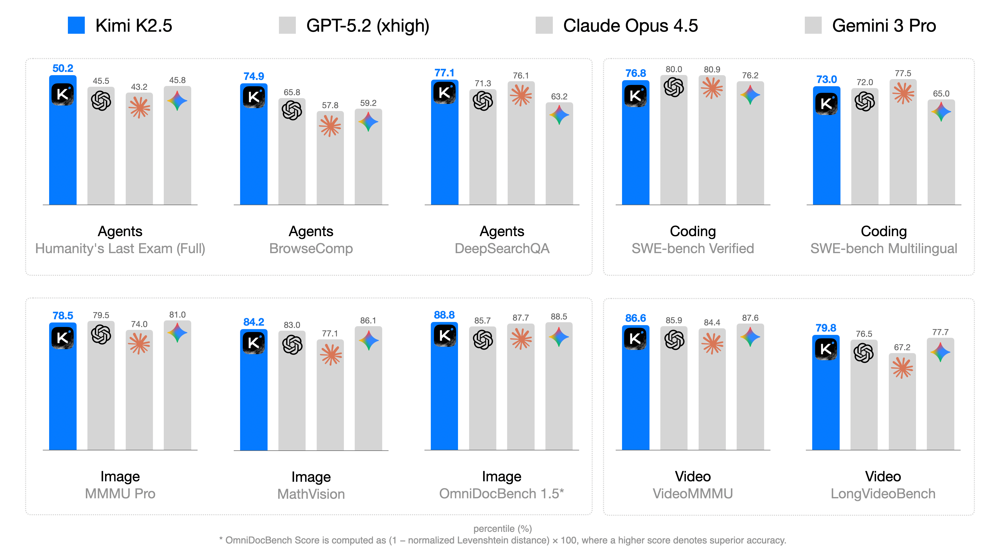
Source: Original paper · Figure 1 · Original asset. Click to zoom.

Figure 1 如何读。按各 benchmark 分组查看同一任务内的条形高度，再回到 Table 4 找协议与完整基线。它是选取结果的总览，展示视觉、语言与 agent 能力覆盖面，不能把不同任务的百分数混成一个统一能力分数。
关键观察与边界。K2.5 在部分视觉和搜索任务突出，但 GPQA 87.6 低于 GPT-5.2 92.4，OSWorld 63.3 低于 Claude 66.3。论文支持“广泛竞争力与若干显著提升”，不支持全部任务、全部成本条件下领先。
Interpretation · 为什么值得读。它把三种不同层次的选择放在一起：模型结构选择如何编码视觉，训练选择如何迁移行为，推理策略选择如何分配上下文与并发。若只看榜单，就看不到真实部署中这些选择如何改变 TTFT、单步生成成本和任务完成时间。
2. Joint Optimization of Text and Vision：联合优化在哪里发生
2.1 Native Multimodal Pre-Training：early fusion 的证据与混杂因素
What / Why。在最终视觉、文本 token 预算固定的条件下，作者比较视觉注入时间不同的三种训练 schedule。早加入视觉，可以让跨模态表征在更长的训练过程中共同演化，减少晚期突变对已形成语言能力的扰动。
Source: Original paper · Table 1. Author-emphasized values are preserved; “SOTA” in the caption is the paper’s dated claim.
| Vision Injection Timing | Vision-Text Ratio | Vision Knowledge | Vision Reasoning | OCR | Text Knowledge | Text Reasoning | Code | |
| Early | 0% | 10%:90% | 25.8 | 43.8 | 65.7 | 45.5 | 58.5 | 24.8 |
| Mid | 50% | 20%:80% | 25.0 | 40.7 | 64.1 | 43.9 | 58.6 | 24.0 |
| Late | 80% | 50%:50% | 24.2 | 39.0 | 61.5 | 43.1 | 57.8 | 24.0 |
How to read。Early 在 0% 进度注入，vision:text 为 10:90；Mid 在 50% 注入，20:80；Late 在 80% 注入，50:50。六列是内部能力评测得分，越高越好；表内没有给出每个聚合能力完整数据集定义与方差，不能与 Table 4 的公开 benchmark 直接等同。
重新算收益。Early 相对 Late，视觉知识 +1.6、视觉推理 +4.8、OCR +4.2、文本知识 +2.4、文本推理 +0.7、代码 +0.8 分。视觉推理相对提升 4.8/39.0 = 12.31%；但 Early 文本推理 58.5 比 Mid 的 58.6 低 0.1 分。
Caveat。注入时间和训练期内模态比例一起改变。因此能比较整个 schedule，不能单独归因“早注入”或“较低比例”。也没有置信区间证明 0.1 分差异有统计意义。最终大模型采用从 K2 near-end checkpoint 继续联合训练，不能把小规模 schedule 消融理解成 K2.5 从随机初始化就以固定 10:90 训练。
2.2 Zero-Vision SFT：文本工具行为为什么能够迁移
Paper。首次后训练只用文本 SFT，包含推理、代码和工具交互行为。此时模型已通过联合预训练学会把视觉编码映射到语言空间，因此在图像任务中能调用 IPython 做裁切、计算或视觉验证。作者报告加入视觉 SFT 的初步尝试反而较差，并推测可能与视觉指令数据质量不足有关。
重构数据流。图像 → 视觉编码 / projector → 语言 hidden；用户问题 → 生成工具调用 → 环境执行 → 工具结果加入上下文 → 模型继续推理 → 输出答案。text-only SFT 主要教会后半段的行为格式与工具策略，前半段对齐由预训练提供。迁移不是“图像 token 变成文本字符”，而是共享 backbone 接收不同来源的 embedding 后，使用已经学会的 action vocabulary。
证据边界。没有完整、等 token、等训练计算的 text-only 对 text+vision SFT 数值消融，无法证明视觉 SFT 一般有害。Appendix B 的预训练数据明确含人工 GUI 轨迹；后续视觉 RL 与 rejection fine-tuning 又产生视觉轨迹。零视觉只限定这个 SFT 阶段。
解释图如何读。上半部分形成共享视觉—语言表示，下半部分激活工具与结果导向行为。PARL 是另一个训练目标：学习任务调度。图中的冻结执行者表示该阶段不更新其参数，并不表示它从来没有训练。
2.3 Joint Multimodal RL：用可验证结果约束视觉推理
Paper · How。视觉 outcome RL 覆盖 grounding / counting、图表与文档理解，以及必须观察图像才能解答的 STEM 问题。成功轨迹经过 rejection sampling，再用于 fine-tuning，形成自我改进链路。任务设计试图阻止模型仅凭语言先验猜答案。
联合 RL 按知识、推理、代码、agent 等能力域组织训练，同时接收纯文本与多模态问题；并非把 text / vision 划为互不交互的专家。GRM 也评估跨模态轨迹。这是训练域的组织方式，不等于 backbone 的 MoE router 按这些能力标签固定分配专家。
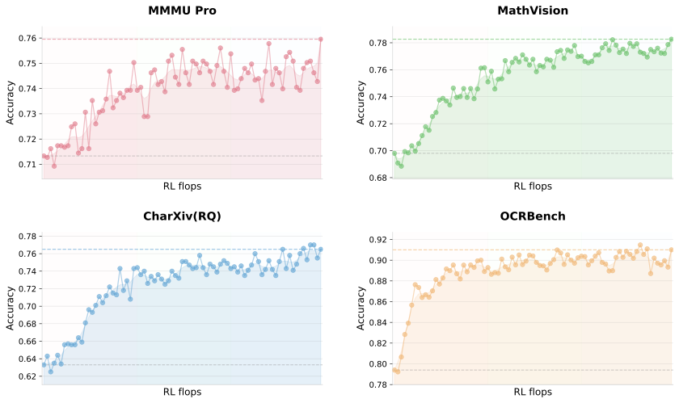
Source: Original paper · Figure 2 · Original asset. Click to zoom.

Figure 2 阅读顺序。按 MMMU-Pro、MathVision、MathVista 三条曲线分别看 RL 扩展后的趋势。起点对应最小 zero-vision SFT；纵轴是任务得分，横轴表达增加视觉 RL 计算。三项持续改善支持“无需先用大量视觉 SFT，也能沿 RL 链路获得视觉能力”。
边界。横轴没有可换算的绝对 FLOPs、GPU-hours 或美元；不能量化每单位投资收益，也无法仅从曲线证明“只需要这两个阶段”对任意视觉任务都充分。
Source: Original paper · Table 2. Author-emphasized values are preserved; “SOTA” in the caption is the paper’s dated claim.
| Benchmark | Before Vision-RL | After Vision-RL | Improvement |
| MMLU-Pro | 84.7 | 86.4 | +1.7 |
| GPQA-Diamond | 84.3 | 86.4 | +2.1 |
| LongBench v2 | 56.7 | 58.9 | +2.2 |
跨模态迁移证据。视觉 RL 前后，MMLU-Pro +1.7pp（相对 2.01%），GPQA +2.1pp（2.49%），LongBench v2 +2.2pp（3.88%）。这些是同一训练链路上的三个语言指标，支持观察到的正迁移。它们不同于 Table 4 最终模型 87.1 / 87.6 / 61.0，不应混用 checkpoint。
缺少什么。若要证明增益来自视觉而非额外 RL 计算，需要等 FLOPs 的纯文本 RL 控制组，以及多个训练 seed、更多语言任务和遗忘测试。“三项未下降”不能推出所有语言能力均不退化。
3. Agent Swarm：并行策略、上下文分片与训练信用分配
训练对象与执行链路
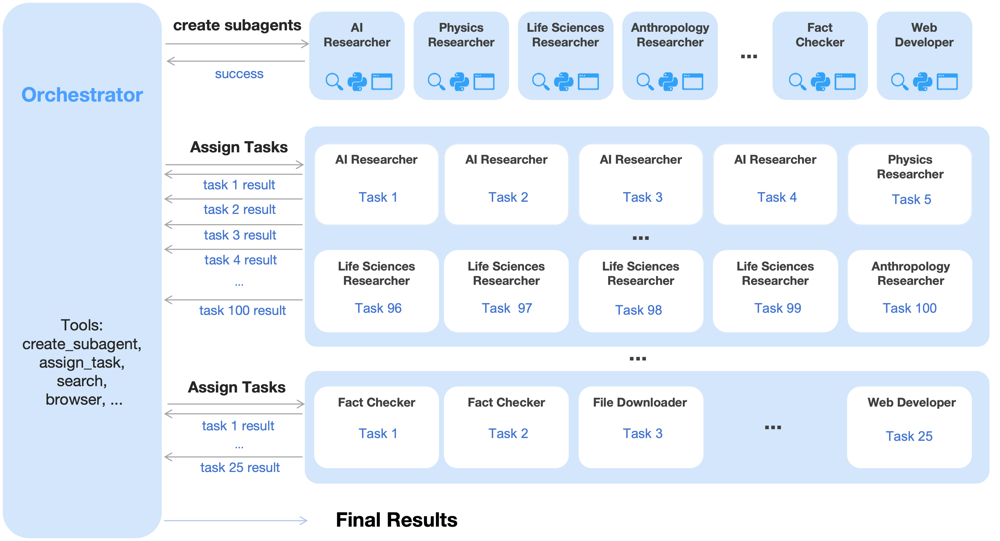
Source: Original paper · Figure 3 · Original asset. Click to zoom.

Figure 3 模块与箭头。主智能体接收任务，定义不同角色的 subagent，把子任务分发到各自上下文；执行者调用工具并返回消息；主智能体根据返回结果继续分解或汇总。训练信号回到 orchestrator，subagent 参数冻结。
Why。如果调度者和执行者一起变化，失败可能来自不合理分工，也可能来自执行能力不足，难以给调度策略分配信用。固定执行者使训练环境相对稳定；作者先使用较小执行者训练，随后换更强执行者。这不是全体 agent 端到端共同更新。
接口重构。create_subagent(name, system_prompt) 创建可复用的角色配置；assign_task(agent, prompt) 启动一次工作并返回消息。角色名是 prompt 层的专业化，没有新增模型专家权重。独立上下文既能隔离任务，也会使最终汇总仅看到执行者回传的信息；遗漏、错误引用和冲突事实需要额外验证。
PARL reward：先鼓励探索，再回到任务结果
LaTeX source
\displaystyle r_{\mathrm{PARL}}(x,y)=\lambda_{1}\cdot\mspace{-26mu}\underbrace{r_{\text{parallel}}}_{\text{instantiation reward}}\mspace{-9mu}+\mspace{18mu}\lambda_{2}\cdot\mspace{-32mu}\underbrace{r_{\text{finish}}}_{\text{sub-agent finish rate}}+\underbrace{r_{\text{perf}}(x,y)}_{\text{task-level outcome}}\,.符号与形状。输入任务 x、整条调度轨迹 y；三种 reward 和 λ₁、λ₂ 都是标量，批量 rollout 可以组成 [K]。r_parallel 奖励实例化，帮助模型探索分工；r_finish 奖励执行者完成，抑制只创建不干活；r_perf(x,y) 衡量最终任务质量。辅助系数逐步退火到零，后期主要优化结果。
直觉。只奖励准确率时，早期探索难成功，模型容易回到单智能体；只奖励 agent 数量则会无意义生成角色。加入完成率能约束前者，但仍不能证明彻底避免 reward hacking。论文未给出辅助 reward 具体标度、完整退火 schedule 和所有任务的结果评分器实现。
教学例。若假设三项分别为 0.5、0.8、0.7，λ₁=λ₂=0.1，则总 reward 为 0.83；当辅助 λ 退火到 0，变成 0.7。这个例子只演示加权机制，不是论文某条真实轨迹。轨迹生成与评分成本还取决于工具调用量，reward 加法本身 O(1) 并不代表训练便宜。
CriticalSteps：关键路径比总工作量短
LaTeX source
\displaystyle\text{CriticalSteps}=\sum_{t=1}^{T}\left(S_{\mathrm{main}}^{(t)}+\max_{i}S_{\mathrm{sub},i}^{(t)}\right).符号。T 为顺序阶段数；S_main^(t) 是该阶段主智能体步骤；S_sub,i^(t) 为并行批次中执行者 i 的步骤。每批次在理想同时开始、等待所有结果的条件下由最长分支决定关键路径；没有子任务时，可在解释模型中令 max 为 0。
工程意义。总工作量是各分支步骤之和；关键路径用 max。串行阶段不能被并发消除，尾部慢任务会限制加速。论文称此指标为延迟代理，它不是实际墙钟，更不是 GPU FLOPs。各步生成 token 数、工具耗时、网络、队列、batching 和并发资源都可能不同。
总 work 与关键路径
只模拟一个串行阶段：先执行主 agent，再启动独立分支。每步假设耗时相同，所有分支均须完成。
论文 CriticalSteps=main+max(branch)。有限 worker 的 main+max(max(branch),ceil(total branch work/workers)) 是理想下界，非真实排程结果；忽略 token 长度、工具/网络等待及 GPU 队列。
如何理解交互。分支越多，理想关键路径未必变长，但总 work 持续增加。把一个分支设得很长，会看到等待尾分支的效应。有限 worker 下，最长分支还要与总 work / worker 数共同约束时间；这只能给理想下界，不是生产调度器的实测耗时。
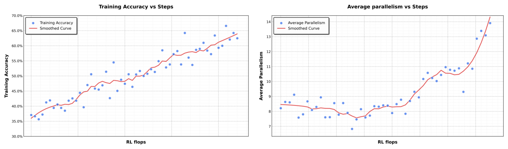
Source: Original paper · Figure 4 · Original asset. Click to zoom.

Figure 4 如何读。训练进度横轴上，准确率与并行度都逐渐增长。它支持策略确实逐步使用并行机制，并保持任务效果改善。两条趋势共变不能替代“相同模型、相同预算，仅改变并行度”的因果消融。
扩展性边界。官方介绍允许最多 100 个子智能体、1,500 次工具调用；这是能力上限和服务配置，不等于每个测试都持续满载。模型 checkpoint 可共享，每条活跃 context 的 KV 仍需单独承担，除非服务显式支持 prefix sharing。
4. Method Overview：从像素、token 到分布式训练
4.1 Foundation：1.04T 总参数与 32B 活跃参数
Paper。K2.5 基于 K2，主文写总参数约 1.04T、每 token 激活约 32B，384 routed experts、top-8。K2 基础文本训练主文约 15T；官方 K2 报告另有 15.5T 口径，本文保持 K2.5 原文而不替换数字。K2.5 从 near-end checkpoint 继续约 15T 多模态训练。
成本直觉。32B 是计算活跃规模，不能据此说模型只需 32B 权重内存。1.04T 全 BF16 为 2.08TB 十进制；假设全 INT4 的理想位数下界为 520GB，实际混合精度、scale 与元数据还会增加。8/384 = 1/48 只针对 routed expert 集合，不是总计算量降至 Dense 的 1/48。
4.2 Architecture：视觉压缩的具体张量
| 模块 | 公开配置 | 需要注意 |
|---|---|---|
| 文本 backbone | hidden 7168；61 层；首层 dense、其余 60 层 MoE | 384 routed experts，每 token top-8，另有 1 shared expert |
| FFN | routed expert hidden 2048 | 激活路由减少专家计算，权重仍需可寻址 |
| MLA | 64 Q heads；Q low-rank 1536；KV latent 512；RoPE 64；no-RoPE QK 128；V 128 | KV 不能按普通 64-head MHA 公式计 |
| 词表 / context | vocab 163840；max 262144 | 图像、时间戳、工具结果与文本共同占用 |
| MoonViT-3D | 27 层；width 1152；FFN 4304；16 heads；patch 14 | 同 chunk 的空间—时间联合处理 |
| 空间 / 时间压缩 | 2×2 patch merging；最多 4 帧一组 | 空间为通道拼接，时间为平均池化 |
External · 源码复核。公开 modeling_kimi_k25.py 的 tpool_patch_merger 与 PatchMergerMLP 显示：令 h=H/14、w=W/14，输入一个 g 帧 chunk [g,3,H,W]，视觉编码输出 [g·h·w,1152]；重排为空间 2×2 单元，对时间维求 mean，获得 [(h/2)(w/2),4,1152]；LayerNorm 后四个 patch 通道展开为 4608，再由 MLP 4608 → 4608 → 7168 投影。语言输入是 [B,L_text+L_visual,7168]。
# Interpretation: shapes reconstructed from the public implementation.
# pixels have already been aligned to the processor's spatial constraints.
z = vision_encoder(pixels) # [g*h*w, 1152]
z = z.reshape(g, h//2, 2, w//2, 2, 1152)
z = z.permute(1, 3, 0, 2, 4, 5) # [h/2,w/2,g,2,2,1152]
z = z.mean(dim=2) # temporal mean only
z = z.reshape((h//2)*(w//2), 4, 1152)
z = layer_norm(z).flatten(1) # [h*w/4, 4608]
visual_tokens = projector(z) # [h*w/4, 7168]
Why this shape matters。2×2 空间压缩保留四个 patch 的通道，然后学习投影；四帧时间 mean 会不可逆融合帧间差异。短暂小字或瞬时事件可能被削弱，不能把“支持长视频”理解成逐帧细节全部保留。
计算复杂度。每 chunk 原始视觉 token 数约 g·h·w，视觉 self-attention 的成对计算随其平方增长，MLP 随 token 数线性增长。时间池化发生在视觉编码之后，主要减少语言 backbone 输入与 KV；它没有让 ViT 只处理四分之一原始帧，也不是让整段视频所有帧做全局注意力。
视频如何占满 context 与 KV
调整帧数、分辨率、时间组和独立上下文数。默认对应长视频协议；只计算视觉 token 的 BF16 MLA latent KV 下界。
ceil(frames/g) chunks；尾组假设可形成一个 chunk。每 chunk=(resolution/14)²/4 tokens。ViT 仍编码所有原始帧；markers、文本、activation、paging、权重与共享前缀不在下界中。
两组原文输入协议的算账。2048 帧、448×448、g=4：每帧 1024 patches，每 chunk 256 个语言视觉 token，共 131072；若 g=1 则 524288，已经超出 256K。128 帧、896×896、g=4：每帧 4096 patches，最后 32768 个视觉 token。markers / 时间戳 / 文本另计；分辨率不是免费提高的参数。
MLA 缓存下界。假设每层缓存 512 维 compressed KV 和 64 维 RoPE key、BF16，每 token 61×(512+64)×2 = 70272 bytes = 68.625 KiB。131072 tokens 为 8.578125GiB，满 262144 为 17.15625GiB。若概念上展开 64 头 K/V，则 61×64×(192+128)×2 = 2498560 bytes/token，约 35.56 倍；这是缓存表示对照，不承诺各框架实现完全相同。
服务额外成本。分页、对齐、量化 scale、临时 activation、视觉编码 workspace、TP 复制及 prefix sharing 会改变实际峰值。100 条满 256K、完全独立的 BF16 latent KV 约 1.675TiB，表示一个极端容量例子，不代表真实服务常态。量化权重也不会自动量化 KV。
4.3 Pre-training Pipeline：阶段表与预算口径
Source: Original paper · Table 3. Author-emphasized values are preserved; “SOTA” in the caption is the paper’s dated claim.
| Stages | ViT Training | Joint Pre-training | Joint Long-context Mid-training |
| Data | Alt text Synthesis Caption Grounding, OCR, Video | + Text, Knowledge Interleaving Video, OS Screenshot | + High-quality Text & Multimodal Long Text, Long Video Reasoning, Long-CoT |
| Sequence length | 4096 | 4096 | 32768262144 |
| Tokens | 1T | 15T | 500B200B |
| Training | ViT | ViT & LLM | ViT & LLM |
How。ViT 先用 alt-text、合成 caption、grounding / OCR / video 等学习视觉表示；联合阶段同时更新 ViT 和 LLM，纳入交错视觉文本、知识、视频和系统截图；mid-training 扩展长文本、长视频与长链推理。序列从 4096 扩至 32768，再到 262144。
具体对齐与目标。MoonViT-3D 从 SigLIP 持续训练，但这一阶段不用 contrastive loss，仅用视觉条件 caption 的 cross-entropy。先以 Moonlight-16B-A3B 为语言侧更新 ViT，约 1T tokens；随后一个很短阶段只更新 MLP projector，接到 1T 级 backbone。Joint 阶段增加 coding 数据权重、控制各来源最大 epochs；长上下文阶段使用 YaRN 插值。视觉初始化、projector 对齐和完整联合更新不是同一训练步骤。
审计。Table 3 写 ViT 1T、joint 15T、mid 500B → 200B，按独立阶段相加为 16.7T。主文“约 15T”未明确覆盖哪些阶段或舍入方式，不能据此声称精确总训练预算为 15T，更不能把视觉 token 和语言 token 当成每个都相同 FLOPs。固定 token 总数并不固定视觉编码、attention 与通信成本。
4.4 Post-Training：混合 SFT、RL 目标与 Toggle
SFT。在联合预训练之后，以文本指令、推理、代码、工具行为形成 reasoning / non-thinking 等能力；zero-vision 指最初这个后训练阶段。后续 outcome RL 和成功轨迹再训练使视觉行为继续变化。
候选响应来自 K2、K2 Thinking 和内部专家模型，经人工标注、prompt engineering 与多阶段验证形成指令数据。RL 用 MuonClip；可验证任务采用 rule-based outcome reward，开放任务用 GRM 细粒度评价帮助性、响应准备度、上下文相关性、细节适当性、产物美感与严格指令遵循，并使用多套 rubric 降低单一评分器过拟合。
视觉 reward 也不止“答案对错”：grounding 用 IoU 软匹配的 F1，point localization 用最优匹配下 Gaussian 距离软匹配；polygon 先 rasterize 为 mask 再算 IoU；OCR 用 normalized edit distance；counting 按绝对误差评分；复杂视觉 puzzle 还用 K2 verifier。不同 reward 的标度和校准会影响优化，缺乏公开完整细节时不能假设都等价于二元成功率。
LaTeX source
\displaystyle L_{\mathrm{RL}}(\theta)=\mathbb{E}_{x\sim\mathcal{D}}\left[\frac{1}{N}\sum_{j=1}^{K}\sum_{i=1}^{|y_{j}|}\mathrm{Clip}\left(\frac{\pi_{\theta}(y_{j}^{i}|x,y_{j}^{0:i})}{\pi_{\mathrm{old}}(y_{j}^{i}|x,y_{j}^{0:i})},\alpha,\beta\right)({r}(x,y_{j})-\bar{r}(x))-\tau\left(\log\frac{\pi_{\theta}(y_{j}^{i}|x,y_{j}^{0:i})}{\pi_{\mathrm{old}}(y_{j}^{i}|x,y_{j}^{0:i})}\right)^{2}\right]\,.原文 Eq. (1) 的符号。x 从任务分布 D 采样，每个 x 产生 K 条响应 yⱼ；N=Σⱼ|yⱼ| 为生成 token 数。πθ/πold 是同一个 token 在当前与采样策略下的概率比；r(x,yⱼ)−r̄(x) 是同任务的组内 reward 中心化；τ 是 log-ratio 二次惩罚权重，α、β 为 clipping 边界。ragged 响应可填充成 [K,L_max] 并使用有效 token mask；reward [K] 广播到 token 维。
逐步直觉。先评估整条响应，减去组均值，再通过每个 token 的策略概率推动高 reward 轨迹；clipping 限制过大策略变化，二次惩罚约束相对旧策略偏离。计算 loss 时 token 求和 O(N)，实际重新算 policy logits 远比这次归约昂贵。
不能静默修正的三处。公式 Clip 输入是概率 ratio，正文却描述 log-ratio clipping 且写 α、β>0；公式是正 reward 项减 penalty，正文称 minimize，若按它的字面正号做梯度下降方向会相反；penalty 写在双重求和之外，i、j 未绑定。这些书写不一致影响实现，本文保留原式。不能直接认定其等同 PPO 的 min(ratio*A, clip(ratio)*A)，也不能在没有训练源码时声称知道作者实际计算图。
实现检查建议。需核验 loss 的符号、penalty 是否逐 token 归约、ratio 或 log-ratio 的 clamp 区间、padding mask 以及 old policy 的版本。若解释为“最大化 reward，最小化 penalty”，可采用 ascent objective / negative loss 的常规关系，但那是解释性修正，非原式证明。
LaTeX source
\displaystyle\tilde{r}(x,y)=\begin{cases}r(x,y)\cdot\mathbb{I}\left\{\frac{1}{K}\sum_{i=1}^{K}r(x,y_{i})<\lambda\ \mathrm{or}\ |y_{i}|\leq\mathrm{budget(x)}\right\}&\text{if }\lfloor t/m\rfloor\pmod{2}=0\ (\mathrm{{Phase0}})\\
r(x,y)&\text{if }\lfloor t/m\rfloor\pmod{2}=1\ (\mathrm{{Phase1}})\end{cases}\,.LaTeX source
\mathrm{budget}(x)=\text{Percentile}\left(\{|y_{j}|\mid r(x,y_{i})=1,i=1,\dots,K\},\rho\right)\,.Toggle 机制。t 是训练 step，每 m steps 切换一次 phase；K 个 rollout 的平均成功率低于 λ 时，为难题放宽预算。Phase 0 中成功但过长的响应 reward 归零；Phase 1 恢复原 reward，仍受系统常规最大长度限制。budget(x) 由正确 rollout 长度的 ρ 分位数预先确定并固定，避免预算随学习一起漂移。
形状与例子。成功 reward / length 都是 [K]，平均成功率与 budget 为标量。教学假设正确响应长度为 100、120、160，选中位数得到 budget=120；Phase 0 的长度 160 响应失去奖励，Phase 1 仍可得分。若整个任务成功率低于 λ，Phase 0 也豁免长度限制。这鼓励短而正确，同时保留探索难题的机会。
书写与边界。Toggle 原式左侧写 y，长度却用 yᵢ；budget 集合长度写 yⱼ、筛选条件用 yᵢ。解释时应统一索引，原文仍照录。若没有正确 rollout，分位数如何回退未披露。阶段公式是确定性交替，不能把正文 stochastic 描述当作独立随机 phase 采样算法；随机性可以来自 rollout。
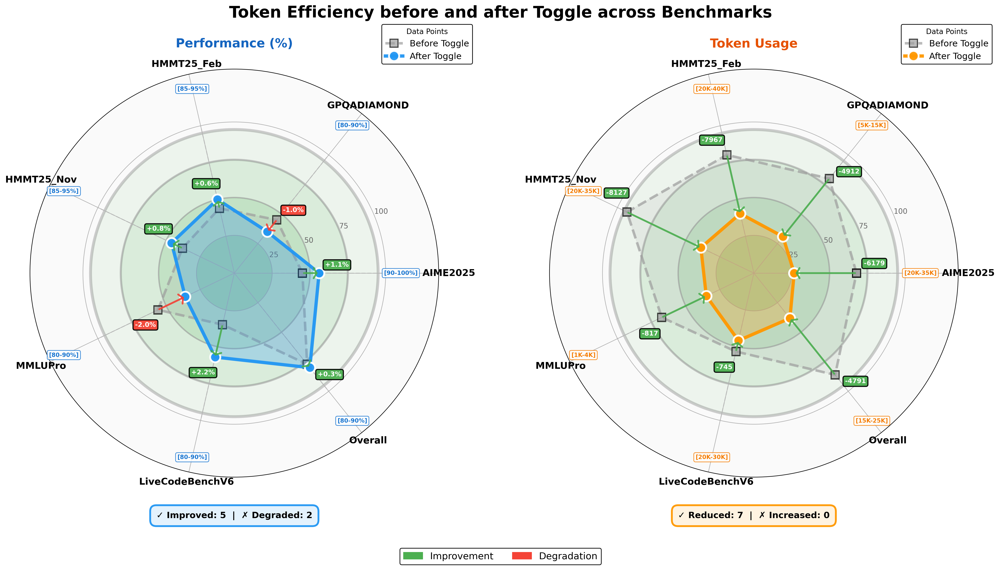
Source: Original paper · Figure 5 · Original asset. Click to zoom.

Figure 5 如何读。分别看能力雷达和 token usage 雷达，比较 token-efficient RL 前后；更短输出需结合得分解释。这张图的模型是 Kimi K2 Thinking，作者报告输出减少约 25–30%，并非 K2.5 独立 Toggle 消融。Table 5 更接近最终 K2.5 的得分—长度观察，也仍包含整个训练链路的变化。
4.5 Infrastructure：DEP 把视觉工作移出 PP0 瓶颈
Paper · Decoupled Encoder Process。若 ViT 只放在 pipeline 第一阶段，视觉比例和图像大小变化会导致 PP0 负载抖动，后级等待。DEP 在各 GPU 复制视觉编码器，把视觉输入分布处理；保留视觉输出、丢弃中间 activation，汇集到 PP0；文本 backbone forward / backward 后，视觉重计算并执行 backward，再同步梯度。
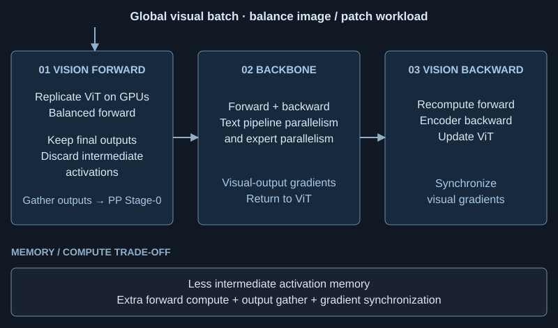
箭头与成本。视觉 forward 分散了负载；gather 把结果送入语言 pipeline；recompute 以计算换激活内存。复制 ViT 增加权重驻留，gather / 梯度同步增加通信。作者称多模态训练保持约 90% 的纯文本训练效率，但未给足可独立复算的绝对吞吐、模态组成、硬件 / batch / denominator。因此不能推为所有工作负载仅 10% 开销。
TTFT / TPOT 关联。DEP 是训练并行，不是公开 serving 的直接优化。在线视觉编码和长视觉 prefill 会增加 TTFT；decode 的每 token MLA 历史读取和 MoE 权重 / EP 通信影响 TPOT；Swarm 的用户任务完成时间还包含工具与汇总。这三种时间不能相互替代。
5. Evaluations：完整结果与预算对齐
5.1 Main Results：完整主表
Source: Original paper · Table 4. Author-emphasized values are preserved; “SOTA” in the caption is the paper’s dated claim.
| Proprietary | Open Source | |||||
| Benchmark | Kimi K2.5 | Claude Opus 4.5 | GPT-5.2 (xhigh) | Gemini 3 Pro | DeepSeek-V3.2 | Qwen3-VL-235B-A22B |
| Reasoning & General | ||||||
| HLE-Full | 30.1 | 30.8 | 34.5 | 37.5 | 25.1† | - |
| HLE-Full w/ tools | 50.2 | 43.2 | 45.5 | 45.8 | 40.8† | - |
| AIME 2025 | 96.1 | 92.8 | 100 | 95.0 | 93.1 | - |
| HMMT 2025 (Feb) | 95.4 | 92.9* | 99.4 | 97.3* | 92.5 | - |
| IMO-AnswerBench | 81.8 | 78.5* | 86.3 | 83.1* | 78.3 | - |
| GPQA-Diamond | 87.6 | 87.0 | 92.4 | 91.9 | 82.4 | - |
| MMLU-Pro | 87.1 | 89.3* | 86.7* | 90.1 | 85.0 | - |
| SimpleQA Verified | 36.9 | 44.1 | 38.9 | 72.1 | 27.5 | - |
| AdvancedIF | 75.6 | 63.1 | 81.1 | 74.7 | 58.8 | - |
| LongBench v2 | 61.0 | 64.4* | 54.5* | 68.2* | 59.8* | - |
| Coding | ||||||
| SWE-Bench Verified | 76.8 | 80.9 | 80.0 | 76.2 | 73.1 | - |
| SWE-Bench Pro (public) | 50.7 | 55.4* | 55.6 | - | - | - |
| SWE-Bench Multilingual | 73.0 | 77.5 | 72.0 | 65.0 | 70.2 | - |
| Terminal Bench 2.0 | 50.8 | 59.3 | 54.0 | 54.2 | 46.4 | - |
| PaperBench (CodeDev) | 63.5 | 72.9* | 63.7* | - | 47.1 | - |
| CyberGym | 41.3 | 50.6 | - | 39.9* | 17.3* | - |
| SciCode | 48.7 | 49.5 | 52.1 | 56.1 | 38.9 | - |
| OJBench (cpp) | 57.4 | 54.6* | - | 68.5* | 54.7* | - |
| LiveCodeBench (v6) | 85.0 | 82.2* | - | 87.4* | 83.3 | - |
| Agentic | ||||||
| BrowseComp | 60.6 | 37.0 | 65.8 | 37.8 | 51.4 | - |
| BrowseComp (w/ ctx manage) | 74.9 | 57.8 | 59.2 | 67.6 | - | |
| BrowseComp (Agent Swarm) | 78.4 | - | - | - | - | - |
| WideSearch | 72.7 | 76.2* | - | 57.0 | 32.5* | - |
| WideSearch (Agent Swarm) | 79.0 | - | - | - | - | - |
| DeepSearchQA | 77.1 | 76.1* | 71.3* | 63.2* | 60.9* | - |
| FinSearchCompT2&T3 | 67.8 | 66.2* | - | 49.9 | 59.1* | - |
| Seal-0 | 57.4 | 47.7* | 45.0 | 45.5* | 49.5* | - |
| GDPVal-AA | 41.0 | 45.0 | 48.0 | 35.0 | 34.0 | - |
| Image | ||||||
| MMMU-Pro | 78.5 | 74.0 | 79.5* | 81.0 | - | 69.3 |
| MMMU (val) | 84.3 | 80.7 | 86.7* | 87.5* | - | 80.6 |
| CharXiv (RQ) | 77.5 | 67.2* | 82.1 | 81.4 | - | 66.1 |
| MathVision | 84.2 | 77.1* | 83.0 | 86.1* | - | 74.6 |
| MathVista (mini) | 90.1 | 80.2* | 82.8* | 89.8* | - | 85.8 |
| SimpleVQA | 71.2 | 69.7* | 55.8* | 69.7* | - | 56.8* |
| WorldVQA | 46.3 | 36.8 | 28.0 | 47.4 | - | 23.5 |
| ZeroBench | 9 | 3* | 9* | 8* | - | 4* |
| ZeroBench w/ tools | 11 | 9* | 7* | 12* | - | 3* |
| BabyVision | 36.5 | 14.2 | 34.4 | 49.7 | - | 22.2 |
| BLINK | 78.9 | 68.8* | - | 78.7* | - | 68.9 |
| MMVP | 87.0 | 80.0* | 83.0* | 90.0* | - | 84.3 |
| OmniDocBench 1.5 | 88.8 | 87.7* | 85.7 | 88.5 | - | 82.0* |
| OCRBench | 92.3 | 86.5* | 80.7* | 90.3* | - | 87.5 |
| InfoVQA (test) | 92.6 | 76.9* | 84* | 57.2* | - | 89.5 |
| Video | ||||||
| VideoMMMU | 86.6 | 84.4* | 85.9 | 87.6 | - | 80.0 |
| MMVU | 80.4 | 77.3* | 80.8* | 77.5* | - | 71.1 |
| MotionBench | 70.4 | 60.3* | 64.8* | 70.3 | - | - |
| Video-MME | 87.4 | 77.6* | 86.0* | 88.4* | - | 79.0 |
| LongVideoBench | 79.8 | 67.2* | 76.5* | 77.7* | - | 65.6* |
| LVBench | 75.9 | 57.3 | - | 73.5* | - | 63.6 |
| Computer Use | ||||||
| OSWorld-Verified | 63.3 | 66.3 | 8.6* | 20.7* | - | 38.1 |
| WebArena | 58.9 | 63.4* | - | - | - | 26.4* |
How to read。原表按 reasoning/general、coding、agentic、image、video、computer use 分组，完整列出闭源和开放模型。原文粗体、星号与 † 保留，脚注用来区分结果来源或评测条件，不能忽略；“–”表示缺失 / 未测，不能当 0。多数分数越高越好，但 GDPVal-AA、文档 edit-distance 分数、Item-F1 和各任务 accuracy 不是同一种指标。
强项。HLE-Full with tools 50.2，相对该表最强外部 45.8 为 +4.4pp（9.61%）；OCRBench 92.3 相对 Gemini 90.3 为 +2.0pp（2.21%）；LongVideoBench 79.8 相对 GPT-5.2 76.5 为 +3.3pp（4.31%）。各基线模型、训练数据与 API 条件不同，所以是观察到的 benchmark 优势，不是单位算力优势。
仍落后的任务。SWE-Bench Verified 76.8，比 Claude 80.9 低 4.1pp；Terminal Bench 50.8 比 59.3 低 8.5pp；SimpleQA Verified 36.9 与 Gemini 72.1 差距明显。视觉 MathVision 84.2 比 Gemini 86.1 低 1.9pp，GUI 的 OSWorld / WebArena 也低于 Claude。不能只展示胜出的视觉任务。
模式影响可比性。Terminal Bench / SWE 最佳结果使用 non-thinking 的原因和 wrapper 在 Appendix E 交代。它们是“模型 + scaffold + mode”的系统结果，不应解读成只比较语言模型推理深度。不同任务的重试、采样次数和工具预算也需要一并阅读。
Source: Original paper · Table 5. Author-emphasized values are preserved; “SOTA” in the caption is the paper’s dated claim.
| Benchmark | Kimi K2.5 | Kimi K2 | Gemini-3.0 | DeepSeek-V3.2 |
| Thinking | Pro | Thinking | ||
| AIME 2025 | 96.1 (25k) | 94.5 (30k) | 95.0 (15k) | 93.1 (16k) |
| HMMT Feb 2025 | 95.4 (27k) | 89.4 (35k) | 97.3 (16k) | 92.5 (19k) |
| HMMT Nov 2025 | 91.1 (24k) | 89.2 (32k) | 94.5 (15k) | 90.2 (18k) |
| IMO-AnswerBench | 81.8 (36k) | 78.6 (37k) | 83.1 (18k) | 78.3 (27k) |
| LiveCodeBench | 85.0 (18k) | 82.6 (25k) | 87.4 (13k) | 83.3 (16k) |
| GPQA Diamond | 87.6 (14k) | 84.5 (13k) | 91.9 (8k) | 82.4 (7k) |
| HLE-Text | 31.5 (24k) | 23.9 (29k) | 38.4 (13k) | 25.1 (21k) |
长度与质量一起看。括号是平均响应 token 数，不是毫秒或总收费。K2.5 相对 K2 Thinking：AIME +1.6pp、30k→25k（−16.67%）；HMMT Feb +6.0pp、35k→27k（−22.86%）；LiveCodeBench +2.4pp、25k→18k（−28%）。GPQA 则 +3.1pp、13k→14k（+7.69%），所以不能说所有任务都缩短。Gemini 在不少行更短且得分更高，K2.5 也没有形成统一长度—质量 Pareto 最优。
成本限制。跨模型 tokenization、token 每步成本、隐藏推理计费以及服务吞吐不同。输出长度变短通常有助于减少 decode 工作，但 TTFT、TPOT 和墙钟仍须实测；Figure 5 与 Table 5 不能归因于同一个单独组件。
5.2 Agent Swarm Results：提升来自哪个基线
Source: Original paper · Table 6. Author-emphasized values are preserved; “SOTA” in the caption is the paper’s dated claim.
| Benchmark | K2.5 Agent Swarm | Kimi K2.5 | Claude Opus 4.5 | GPT-5.2 | GPT-5.2 Pro |
| BrowseComp | 78.4 | 60.6 | 37.0 | 65.8 | 77.9 |
| WideSearch | 79.0 | 72.7 | 76.2 | - | - |
| In-house Swarm Bench | 58.3 | 41.6 | 45.8 | - | - |
重新计算。BrowseComp 60.6→78.4：+17.8pp / +29.37% relative；WideSearch 72.7→79.0：+6.3pp / +8.67%；in-house 41.6→58.3：+16.7pp / +40.14%。BrowseComp 对 GPT-5.2 Pro 77.9 只高 0.5pp，无 paired variance，不能把细小差距当确定排名。
原文 Introduction 的 WideSearch baseline 写 72.8，Table 4 / 6 则为 72.7。本文交互与收益计算采用完整表中的 72.7，同时保留这处源内差异。
换一个 baseline，收益是多少
百分点 Δ=swarm−baseline；relative Δ=(swarm−baseline)/baseline。只有 BrowseComp 报告 context-managed 74.9；其他任务不补造值。均为作者结果，不是等 token / 等费用控制实验。
基线选择为何重要。Table 4 另给 K2.5 with context management 74.9。与它比较 Swarm 的优势只有 +3.5pp / +4.67%。原始单智能体到 context-managed 的 +14.3pp 已占原始到 Swarm +17.8pp 的约 80.34%。这只是不同系统结果差值的算术拆分，不能当作具有因果意义的“贡献占比”。
Source: Original paper · Figure 6 · Original asset. Click to zoom.

Figure 6 模块解读。词云展示 orchestrator 自创建的角色名称及任务异质性：搜索、校验、分析等工作由 prompt 分工。它不是 384 个 routed expert 的结构图，也没有可复算的角色频率数据。图支持存在多样分工，不证明每个角色必要或最优。
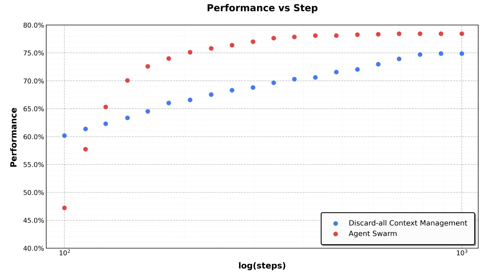
Source: Original paper · Figure 7 · Original asset. Click to zoom.

Figure 7 如何读。比较 BrowseComp 中 Swarm 的 context sharding 与单 agent Discard-all 随预算增加的表现。单 agent 丢历史后可能重复搜索或遗失证据；子 agent 有独立上下文，主 agent 收到摘要，扩大整个系统的有效信息容量。优势不仅是并发；若评测允许更多总 token 与工具预算，比较不再是固定资源实验。
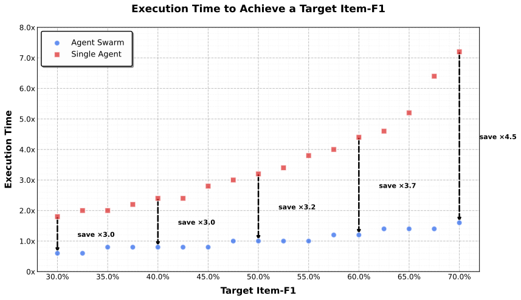
Source: Original paper · Figure 8 · Original asset. Click to zoom.

Figure 8 如何读。横轴为 WideSearch 目标 Item-F1 30%→70%，纵轴比较到达该质量所需执行时间，作者报告 Swarm 相对单 agent 约 3×–4.5×。对齐的是质量阈值，不是工具数、GPU-hours 或美元。原图支持目标质量下较短时间，缺少总资源曲线，因此不能推出总体推理成本下降同样倍数。
公平性与缺失消融。需要固定执行者 checkpoint，分别测 learned PARL / 手工分工、context sharding / 串行共享上下文、并行 / 串行执行；再分别对齐 token、工具调用、GPU-hours 或美元。单一 accuracy 与 parallelism 训练曲线无法隔离这些作用。in-house benchmark 未公开，外部难以验证其覆盖面和偏差。
6. Conclusions：论文支持的结论
Paper。报告强调视觉与语言在联合训练中协同发展、文本行为能迁移到视觉工具任务、并行智能体策略可以训练而非仅手写。K2.5 同时提供广泛 benchmark 结果与可下载模型，为视觉 agent 与推理时规模扩展提供基座。
Interpretation。最有价值的不是“更多 agent”，而是把观察输入 → 工具动作 → 可验证结果 → 分工策略连接起来。论文仍是系统技术报告：部分证据为内部数据、曲线或定性示例，不足以证明每个组件的独立因果收益、全成本可扩展性和训练完全可复现。
Appendix A–B：贡献者与预训练补充
A. Contributors
Appendix A 列出 Kimi Team 成员及研究、基础设施等贡献。它解释这是一项团队系统工程；本文不把作者名单改写为未经确认的个人贡献归因。完整名单保留在指定 PDF / HTML 中。
B. Pre-training：数据类型与 schedule 学习曲线
数据。视觉数据包含 alt-text、合成 caption、OCR、grounding、视频与 interleaved multimodal 内容；GUI / OS screenshot 数据包含人工轨迹。长上下文阶段使用长文本、长视频、推理与长 CoT。数据质量、覆盖度和采样组成影响能力迁移，文本 SFT 的“零视觉”不抹去这些基础。

Source: Original paper · Figure 9 · Original asset. Click to zoom.

Figure 9 如何读。六个能力面板分别比较 Early / Mid / Late 的训练曲线；视觉注入较晚时，文本能力可能先下降再恢复。终点对应 Table 1 的 schedule 比较。图支持早融路线的经验选择，但不同注入时间需要对应比例才能匹配最终模态预算，不能把它拆成纯时间单变量实验。
缺口。每项 aggregate benchmark 的完整组成、seed 方差、每模态 FLOPs 及数据去重明细不足，训练曲线也没有绝对资源账单。建议同时绘制“得分–累计 LLM FLOPs”“得分–总视觉编码 FLOPs”，避免只用 token 进度比较模态成本。
Appendix C：训练基础设施的每一项成本
| 原文配置 / 优化 | 改变的链路 | 代价与核验点 |
|---|---|---|
| NVIDIA H800；每节点 8×400Gbps RoCE | 节点间通信带宽与集群规模 | 理论带宽不等于 All-to-All 有效带宽 |
| PP=16，virtual pipeline stages | backbone 按层切分，重叠微批次 | bubble、视觉批次波动与 stage 不平衡 |
| EP=16；节点按 32 的倍数组织 | MoE token 分发到专家所在设备 | 路由偏斜、All-to-All、跨节点尾延迟 |
| 1F1B 与通信重叠 | forward/backward 与专家通信流水 | 依赖 readiness 与缓冲；不能完全隐藏所有通信 |
| ZeRO-1 | optimizer state 分片 | 参数 / activation 仍有其他驻留成本 |
| selective recompute | LayerNorm、SwiGLU、MLA 上投影等少存 activation | backward 多做算子，增加计算 |
| FP8 E4M3 activation | 对不敏感中间量低精度存储 | 不是全部权重 FP8；需量化误差与溢出控制 |
| CPU streaming offload | activation 在 CPU 与 GPU 之间交换 | PCIe / 内存带宽、stream 同步与峰值缓冲 |
Interpretation · per-op 审计。ViT attention 的峰值可能在时间池化之前；projector 的输入 4608 大于 vision width；MLA 的压缩 KV 投影与上投影引入算子工作，但减少历史驻留与读取；MoE router 本身便宜，跨设备 token dispatch / combine 可能更贵。recompute 减少 activation footprint，却会把这些算子在 backward 重做，不能仅凭显存减少推断训练更快。
Appendix D：Unified Agentic RL Environment
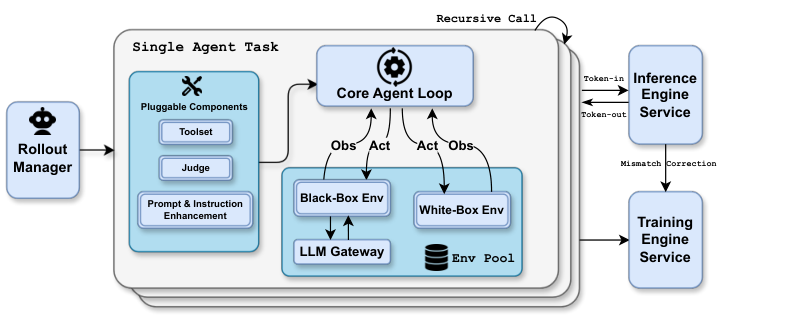
Source: Original paper · Figure 10 · Original asset. Click to zoom.

Figure 10 阅读顺序。从任务与环境交互开始，模型 rollout 生成动作，环境执行工具并返回 observation，结果评估形成 reward，训练侧消费轨迹更新策略。异步交互与可执行环境使 agent RL 不再只是静态文本打分。
模块含义。统一接口把搜索、代码、视觉 / GUI 等环境接到 rollout 链路。可靠的 credit assignment 依赖轨迹、环境状态和 policy 版本一致；需要防止工具超时导致不完整轨迹、回调迟到误归属，以及失败任务被错误计作模型回答。
原文采用 Gym-like 环境、可插拔 toolset / judge / prompt 模块；每个任务是独立异步 coroutine，可以递归创建子 rollout。Rollout Manager 声称支持最多 100,000 个并发 agent task，并管理 environment pool / sandbox 与 partial rollout；这是训练任务并发，不是一个用户任务生成 100,000 个子 agent。推理侧采用 Token-in-Token-out，保存 log probability 做 train–inference mismatch correction；LLM Gateway 为标准 API 的 black-box 环境补齐请求 / 响应记录。
工程解释。多数 agent step 是“生成调用 → 等待外部工具 → 继续生成”的串行依赖。即便 GPU decode 优化明显，外部工具延迟也可能主导完成时间。并行环境可以提高训练吞吐，但必须管理隔离、取消、重试、checkpoint 和日志关联。论文系统图说明了链路，未给完整生产实现与失效恢复测试。
Appendix E：逐项核对评测协议
E.1 General Evaluation Protocol
通常 temperature=1、top-p=0.95、context=256K，具体任务的覆盖设置见以下各节。采样次数与 context 是评测预算的一部分。
E.2 Baselines
Claude Opus 4.5 用 extended thinking，GPT-5.2 用 xhigh，Gemini 3 Pro 用 high thinking，DeepSeek-V3.2 用 thinking（文本），Qwen3-VL 用 thinking（视觉）。作者称 GPT-5.2 视觉任务约 10% 在重试三次后仍没有输出，并计错；这混合模型能力和 API 可用性。不能简单除以 0.9 反推“真实能力”，因为失败未必随机独立。API 不稳定还导致部分高成本任务跳过，缺失值不是零分。
E.3 Text Benchmarks
推理题 completion budget 96K；AIME / HMMT Feb Avg@64，GPQA Avg@8，因此不是单次 pass@1 的低成本调用。LongBench v2 输入约 128K、统一截断；GPT-5.2 因输出格式问题改用 high 而非 xhigh，主表标签需结合此例外阅读。
E.4 Image and Video Benchmarks
视觉 completion 通常 64K、Avg@3；ZeroBench with tools 每步 24K、最多 30 steps。MMMU-Pro 保持官方模态顺序，图片在文本之前。短视频 uniform sample 128 帧、最大空间分辨率 896；长视频 uniform sample 2048 帧、448。Video-MME with subtitles；字幕提供额外语言信息，不与纯视觉条件混比。采样率和四帧池化影响短暂事件可见性，长时长支持不等于原始帧全覆盖。
OmniDocBench 1.5 为 (1 − normalized Levenshtein distance) ×100，不是二分类 accuracy。WorldVQA 官方仓库 对应视觉中心的原子世界知识、精细识别与地理理解。
E.5 Coding and Software Engineering
代码任务 Avg@5。Terminal Bench 使用默认 Terminus 2 scaffold / JSON parser；thinking 与状态管理不匹配，因此使用 non-thinking。SWE 内部最小工具集为 bash/create_file/insert/view/str_replace/submit，non-thinking 获得最佳表现。PaperBench 用 CodeDev，不是全部训练复现；CyberGym level 1，Claude 也用 non-thinking。
E.6 Agentic Evaluation
使用 Python、web search、browse；未注明上下文策略时，溢出计失败。HLE Hide-Tool-Result 保留最新工具结果与全部思考；BrowseComp 同时测无管理与 Discard-all；Seal / WideSearch Avg@4，其余未特别注明通常单次。统一 prompt 强调确认不确定信息、可信来源、编程算数、引用与回到原问题；prompt 与 context 策略均属于系统结果。
E.7 Computer-Use Evaluation
OSWorld temperature=0，WebArena=0.1；最多 100 steps、资源限制下 one-shot。按 OpenCUA 保留最近三张图、全部思考与指令。Claude 仅 computer-use、不加 browser，与其 System Card 不同。WebArena 修正评测脚本、GPT-4o fuzzy judge。统一 prompt 约定 thought / action / pyautogui code，并有 wait / terminate 工具。63.3 / 58.9 依赖版本、步数、judge 和上下文方式。
E.8 Agent Swarm Configuration
主 agent 增加 create_subagent / assign_task；返回单条消息的接口决定信息如何汇总。BrowseComp orchestrator / subagent step budget 15 / 100；WideSearch 100 / 100；in-house 100 / 50。step 约束是工具调用和环境交互的计数。主 agent 15 步不等于全系统仅 15 次调用，子 agent 工作另计。
WideSearch 指标拆解。其 200 个问题要求收集原子信息项。TP 为正确收集的 item，FP 为错误 / 多余 item，FN 为漏项；Precision=TP/(TP+FP)，Recall=TP/(TP+FN)，F1=2TP/(2TP+FP+FN)。候选负项集合没有天然有限定义，TN 不适合补造，Accuracy 不能由 F1 反推。教学例 TP=8、FP=2、FN=4：Precision=80%、Recall=66.67%、F1=72.73%；不代表整张表全部正确。论文 79.0 是 Item-F1，不是 79% 问题完全成功。
E.9 GDPVal
使用 Artificial Analysis 2026-01-28 官方快照。主表 K2.5 41.0，低于 GPT-5.2 48.0 与 Claude 45.0。将其作为该 snapshot 的报告指标保留，不能擅自把指数 / Elo / 偏好结果改称任务准确率。
综合评测审计
高成本基准部分跳过；缺失单元格不是失败率 100%。部分竞品值来自官方、部分由作者重测，要结合主表脚注。模型版本、sampling、scaffold、judge、重试与上下文策略不同，使榜单只能在具体任务协议下解释，不能直接构成公平 FLOPs 排名。
Appendix F：定性案例说明了什么
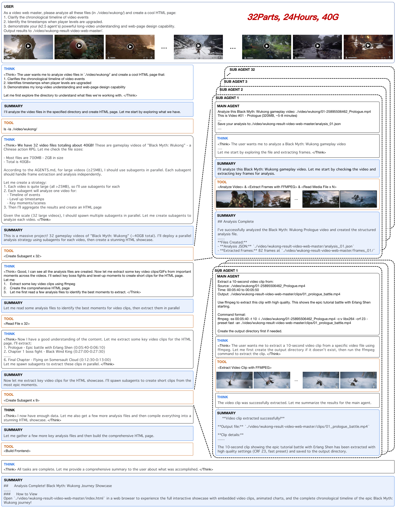
Source: Original paper · Figure 11 · Original asset. Click to zoom.

Figure 11 阅读顺序。查看并行视觉 agent 如何分析 32 段、总计约 24 小时的 1080p《黑神话：悟空》流程视频，并汇总为网页产物。原视频约 40GB；角色分工把大型视频集合拆成局部任务，再聚合内容。
价值与边界。它展示长视频与多 agent 在实际产物中的可用形态，不是包含失败率、人工校验和总成本的量化 benchmark。网页流畅不证明所有事件、字幕、时间戳与引用都正确。1080p 描述源视频，不能认定每一帧都以 1080p 输入语言模型。
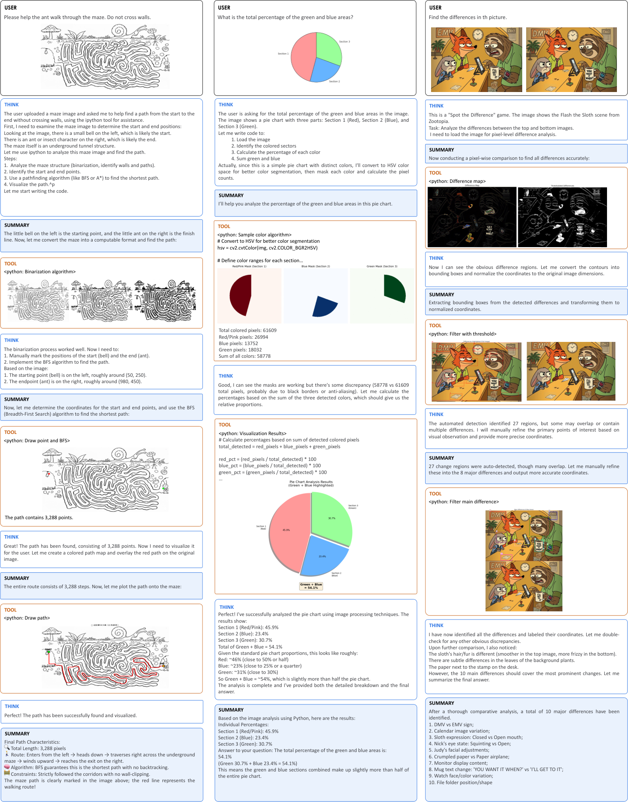
Source: Original paper · Figure 12 · Original asset. Click to zoom.

Figure 12 模块与数据流。迷宫先通过视觉解析再用 BFS；颜色面积通过分割与计数；找不同通过局部视觉比较 / 工具处理。图像任务被改写为可执行中间表示，使工具结果帮助核验答案。
关键洞见。LLM 无需在自然语言思考中精确模拟每个像素。它可以生成操作、让工具承担确定性计算，再解释结果。但视觉到符号的最初转换若错，正确 BFS 也只会解错图；应分别测感知转换和执行计算，不能把成功案例直接推广成可靠视觉数学系统。
Interpretation：工程判断、复现计划与未解决问题
强项与隐藏取舍
Novelty。多 agent 架构已有先例；本文较突出的点是对调度策略进行 RL，并与原生多模态训练连接。zero-vision SFT 展示跨模态行为迁移，但不是未接触视觉数据的零样本学习。
Correctness / evidence。完整 benchmark、阶段消融与曲线支持若干观察；reward 公式书写、SFT 对照缺失、API 故障与置信区间缺乏限制了更强推论。比例和时序一起变化的实验须视为 schedule 对照。
Scalability。独立上下文扩大系统信息容量，理想并发缩短关键路径；权重共享不会消除 KV、工具、摘要与校验成本。任务若强依赖、结果高度耦合或瓶颈在串行汇总，多分支收益就会受限。
Memory / hardware。1T 级 checkpoint、EP 通信、长上下文 KV 与视觉 prefill 使部署依赖集群系统。端侧不宜以 32B active 推定可直接运行；若用更小模型执行视觉工具任务，也须重新验证感知与工具格式稳定性。
Reproducibility。开放权重和推理配置有助复现生成能力，但训练数据、reward 标度、PARL schedule、scaffold 和资源预算并未全部公开，下载模型不等于复现官方 Swarm 服务。
公开量化与部署配置
官方权重使用 native INT4 / compressed-tensors，group size 32、symmetric；attention、shared / dense 部分、lm_head、vision 与 projector 等在配置的 ignore 范围内。dtype=bfloat16 不表示全部权重 BF16，也不能称全部模型 INT4。许可证为 Modified MIT，并包含达到月活超过 100M 或月收入超过 $20M 等商业规模条件后的署名要求；应阅读完整 LICENSE。
官方部署路线包括 vLLM、SGLang、KTransformers，建议 transformers≥4.57.1。不同框架的 MLA cache layout、量化 kernel、EP 与 prefix sharing 可能不同。需要分别报告权重驻留、CPU RSS 峰值、GPU allocated / reserved、视觉编码 workspace 和 KV 峰值。
我会补做的实验
- 分离训练因素。等数据 / FLOPs 比 text-only 与 text+vision SFT；视觉 RL 与额外文本 RL 对照；注入时间和比例做二维消融。
- 分离系统因素。固定 executor，比较 learned PARL / 手写角色 / 随机角色，context sharding / 单 context，并行 / 串行；同时报告 tokens、工具数、GPU-hours、美元、p50 / p95 完成时间。
- 测失败链路。加入工具超时、迟到回调、straggler、子任务取消 / 恢复、重复搜索、冲突答案，审计 final artifact、引用和缓存状态一致性。
- 测视觉损耗。分辨率、帧采样、g=1/2/4、短暂小字 / 多语言 OCR、INT4 对 BF16；把感知错误、工具调用错误与计算错误分别归因。
- 测 serving。同输入、同精度、同 batch 的视觉 TTFT / decode TPOT；记录 per-op 耗时、EP 通信、MLA 历史读取、KV 峰值。Swarm 另外报告用户完成时间，避免拿 token 延迟代替任务延迟。
External：技术演进与截至 2026-10-29 的状态
相关工作矩阵
| 工作 / 时间 | 核心路线 | 优点 | 局限 / 与 K2.5 的关系 |
|---|---|---|---|
| SigLIP，2023，2303.15343 | 图文 sigmoid 对比目标 | 高效视觉表征初始化 | 图文对齐本身不提供工具执行策略 |
| NaViT，2023，2307.06304 | 原生分辨率 patch packing | 减少固定 resize 的限制 | token / attention 成本仍随分辨率增长；K2.5 视觉输入继承相近思想 |
| Kimi-VL，2025，2504.07491 | MoonViT + MoE VLM | 视觉与高效语言 backbone 结合 | 规模与视频 / agent 训练范围不同，是 K2.5 先行路线 |
| Kimi K2，2025，2507.20534 | 大规模 MoE、MuonClip、agentic 能力 | 文本与工具能力基础 | 本文进一步加入联合视觉训练与 PARL |
| WideSearch，2025，2508.07999 | 200 个广度信息收集任务 | 原子 item 能分析漏项与错项 | Item-F1 与整任务 exact success 必须区分 |
| LongCat-Flash-Omni，2025-10，2511.00279 | 多模态 MoE 与 MDP 训练并行 | 同样处理模态导致的 pipeline 不平衡 | 其 >90% 吞吐与 DEP 的 90% 条件不同，不能直接排名 |
| Qwen3-VL，2025-11，2511.21631 | MRoPE、DeepStack、时间对齐 | 另一条视觉注入 / 视频表示路线 | 不同位置与融合策略，不能只看参数与 context |
| DeepSeek-V3.2，2025-12，2512.02556 | 稀疏 attention、agent 数据与长交互 | 优化历史访问与工具推理 | 与 K2.5 的视觉压缩 / 并行上下文分片作用层次不同 |
Before / This Paper / After
2023 的 SigLIP / NaViT 解决视觉表征与输入方式；2025 的 Kimi-VL / K2 分别形成视觉—MoE 与语言 agent 基础。2026-01-27 K2.5 产品发布，2026-02-02 v1、08-07 v2 报告说明联合训练与 PARL。后续官方 help 记载 K2.6 于 04-20 发布、支持 300 subagents / 4000 calls，当前服务提及 K3 Swarm；v2 日期晚于部分产品后续，不宜按论文版本日期推断产品首次出现时间。
External · 多 agent 工程先例。Anthropic 多智能体研究系统 已描述 orchestrator / workers、独立 context 与并行查找，并报告自家任务上的提升及多 agent 约 15× 普通 chat token 使用。这里的 15× 不是 K2.5 测量。该资料强调协调、上下文压缩与可观测性，和本文关键路径 / 信息容量解释一致，也说明多 agent 的潜在成本。
当前状态：按 benchmark 与协议限定
Kimi 官方路线。Agent Swarm help 与 K3 官方介绍 显示产品已向后续模型发展。K3 官方自述 2.8T、1M context、KDA + AttnRes、16/896 Stable Latent MoE；这些属于另一模型，不是 K2.5 的配置。help 的 BrowseComp 15.9→33.3 与本文 60.6→78.4 协议不明，不能替换原表。部分旧 blog 当前混入新模型表头，必须按阅读日页面核验，不把所有数字当原始发布快照。本文未据仅有发布承诺断言 K3 权重已可下载。
OSWorld 已换任务。原 OSWorld 页 宣布 2026-06-26 推出 OSWorld 2.0。OSWorld 2.0 2026-10-15 榜单快照使用 108 个长时任务、31 个网站，平均需超过 250 steps；榜单条件为 500 steps。该快照 Claude Opus 5 max / batch v2.1 binary=44.33、partial=77.67；Kimi 2.6 standard / v2026.06.24 binary=4.6、partial=22.1，版本和模式均不同。此处用于说明新任务与新协议，不能用 44.33 与旧 OSWorld-Verified 63.3 直接比较或宣布 K2.5 退步。
开源与独立复现。K2.5 权重与推理实现公开；本文未找到在相同工具、上下文及总成本条件下完整独立复现 PARL / Swarm 收益的证据。闭源 API 排名和官方宣传不能替代此项。当前不存在跨视觉、代码、研究 agent 与 GUI 的单一通用 SOTA，应按任务、版本、预算和指标分别报告。
Related Readings
- Vision Transformer：视觉 patch 与输入成本
- Sparsely-Gated MoE：路由、容量与通信
- GQA：Query 与 KV 的不同成本
- PagedAttention：KV 容量、并发与 prefix sharing
- VRoPE：视频位置、连续性与 token 压缩
- AWQ：量化精度与实际 kernel 性能
References & Source Audit
Original paper。2602.02276v2 PDF、HTML、arXiv metadata。原图 1–12、完整表 1–6、5 个独立显示公式全部保留。HTML 的 budget 公式重复嵌套按一个公式计数。Figure 8 caption 中 HTML 重复的乘号文本规范为 ×，数值不变。
Official code / model。GitHub、固定 revision 配置、固定 revision 视觉实现、LICENSE。
Related primary sources。相关论文见矩阵；后续状态见官方 help、K3 与 OSWorld 2.0 链接，检索截止 2026-10-29。区分原论文报告、源码核查、本文解析计算和最新页面自述；未进行训练或硬件性能复现。
最终判断。K2.5 展示了从共享多模态表征到工具执行，再到可学习任务分工的完整方向。部署时应同时核算视觉编码、语言 prefill / decode、并发 KV 和外部工具；验证时应分开感知正确性、执行正确性和最终产物完整性。论文的性能收益有价值，但仍需等成本、分因素与失效链路实验，才能判断它在具体业务中的收益。